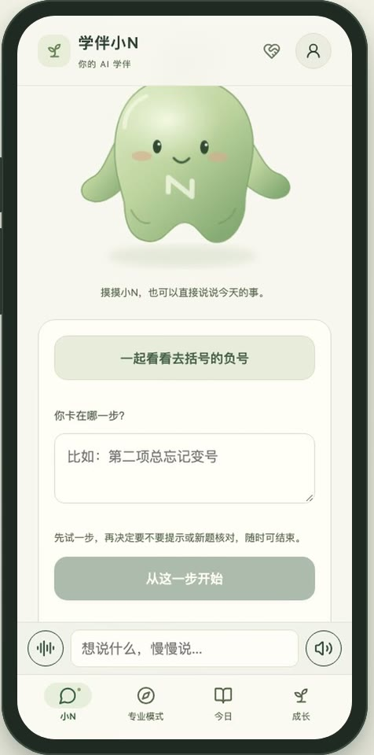
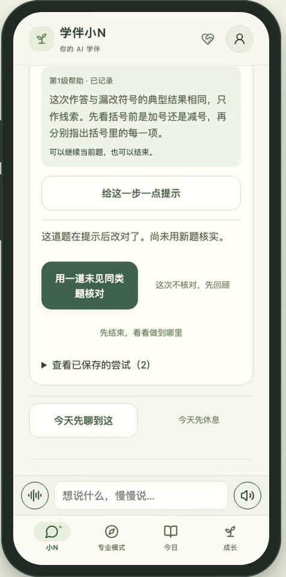

<title>学伴小N</title>
<meta name="claude:viewport-fit-sides" content="cover">
<meta name="description" content="学伴小N，一款从七年级数学切入的 AI 学习伙伴。陪你把卡住的那一步，想明白。">
<link rel="preconnect" href="https://fonts.googleapis.com">
<link rel="preconnect" href="https://fonts.gstatic.com" crossorigin>
<link rel="stylesheet" href="https://fonts.googleapis.com/css2?family=Noto+Sans+SC:wght@400;500;700&family=Noto+Serif+SC:wght@600;900&display=swap">
<style>
/* 一页方格作业本：方格纸为底，开场左字右小N；中段是一页批改过的练习，红笔只出现在批改处；其余用窄栏把话说清 */
:root {
  --paper: #f8f7ef;      /* 作业本纸 */
  --paper-2: #eff1e4;    /* 浅一层的卡片底 */
  --grid: #e3e7d6;       /* 方格线 */
  --ink: #2d4034;        /* 正文墨色 */
  --muted: #66735f;
  --green: #3e624c;      /* 品牌绿 */
  --sprout: #a9c58a;     /* 小芽浅绿 */
  --pen: #b8483a;        /* 批改红笔，只用于批改 */
  --on-green: #fbfaf2;
  --line: #dfe3d2;
  --display: "Noto Serif SC", "Songti SC", "STSong", Georgia, serif;
  --body: "Noto Sans SC", "PingFang SC", "Hiragino Sans GB", "Microsoft YaHei", system-ui, sans-serif;
  --hand: "Kaiti SC", "STKaiti", "KaiTi", "Noto Serif SC", serif;
  --mono: ui-monospace, "SF Mono", Menlo, Consolas, monospace;
}
@media (prefers-color-scheme: dark) {
  :root:not([data-theme="light"]) {
    --paper: #18211b; --paper-2: #202b23; --grid: #253128; --ink: #e6eadb; --muted: #a3ae9b;
    --green: #9cc08a; --sprout: #6f9a5e; --pen: #ec8a7a; --on-green: #142017; --line: #2f3b31;
    color-scheme: dark;
  }
}
:root[data-theme="dark"] {
  --paper: #18211b; --paper-2: #202b23; --grid: #253128; --ink: #e6eadb; --muted: #a3ae9b;
  --green: #9cc08a; --sprout: #6f9a5e; --pen: #ec8a7a; --on-green: #142017; --line: #2f3b31;
  color-scheme: dark;
}

* { box-sizing: border-box; }
html { scroll-behavior: smooth; }
@media (prefers-reduced-motion: reduce) { html { scroll-behavior: auto; } }
body {
  background: var(--paper);
  color: var(--ink);
  font-family: var(--body);
  font-size: 16px;
  line-height: 1.75;
  -webkit-font-smoothing: antialiased;
}
body::before {
  content: ""; position: fixed; inset: 0 0 auto; height: env(safe-area-inset-top, 0px); z-index: 10;
  background: var(--paper);
}
a { color: inherit; }
:focus-visible { outline: 2px solid var(--green); outline-offset: 3px; border-radius: 4px; }
h1, h2, h3 { font-family: var(--display); text-wrap: balance; margin: 0; letter-spacing: .01em; }
p { margin: 0; }

.wrap {
  max-width: 1080px; margin: 0 auto;
  padding-left: max(20px, env(safe-area-inset-left, 0px));
  padding-right: max(20px, env(safe-area-inset-right, 0px));
}
.squared {
  background-image:
    linear-gradient(var(--grid) 1px, transparent 1px),
    linear-gradient(90deg, var(--grid) 1px, transparent 1px);
  background-size: 28px 28px;
  background-position: -1px -1px;
}
.eyebrow {
  font-size: 13px; letter-spacing: .18em; color: var(--muted); font-weight: 500;
}

/* 顶栏 */
.top {
  position: sticky; top: env(safe-area-inset-top, 0px); z-index: 5;
  background: color-mix(in srgb, var(--paper) 92%, transparent);
  backdrop-filter: blur(8px);
  border-bottom: 1px solid var(--line);
}
.top .wrap { display: flex; align-items: center; gap: 20px; height: 60px; }
.brand { display: flex; align-items: center; gap: 8px; text-decoration: none; font-family: var(--display); font-weight: 900; font-size: 19px; }
.brand svg { width: 34px; height: 32px; }
.top nav { display: flex; gap: 22px; margin-left: auto; font-size: 14px; }
.top nav a { text-decoration: none; color: var(--muted); }
.top nav a:hover { color: var(--ink); }
.btn {
  display: inline-flex; align-items: center; justify-content: center; gap: 8px;
  min-height: 44px; padding: 0 20px; border-radius: 12px;
  font: 600 15px/1 var(--body); text-decoration: none; white-space: nowrap;
  background: var(--green); color: var(--on-green); border: 1px solid var(--green);
  transition: transform .15s ease, box-shadow .15s ease;
}
.btn:hover { transform: translateY(-1px); box-shadow: 0 6px 18px -8px var(--green); }
.btn.ghost { background: transparent; color: var(--green); }
.top .btn { min-height: 38px; padding: 0 14px; font-size: 14px; }
@media (max-width: 720px) { .top nav { display: none; } .top .btn { margin-left: auto; } }

/* 开场 */
.hero { border-bottom: 1px solid var(--line); }
.hero .wrap {
  display: grid; grid-template-columns: 1.15fr .85fr; gap: 32px; align-items: center;
  padding-block: 72px 64px;
}
.hero h1 { font-size: clamp(40px, 6.4vw, 76px); line-height: 1.12; font-weight: 900; }
.hero h1 .step { color: var(--green); position: relative; white-space: nowrap; }
.hero h1 .step::after {
  content: ""; position: absolute; left: -2%; right: -2%; bottom: .02em; height: .16em;
  background: var(--sprout); opacity: .55; z-index: -1; border-radius: 2px;
}
.hero .lede { margin-top: 24px; font-size: 18px; max-width: 34em; color: var(--muted); }
.hero .lede strong { color: var(--ink); font-weight: 500; }
.hero .actions { display: flex; flex-wrap: wrap; gap: 12px; margin-top: 32px; }
.hero .fine { margin-top: 16px; font-size: 13px; color: var(--muted); }
.mascot-stage { position: relative; display: grid; place-items: center; min-width: 0; padding-top: 72px; }
.mascot-stage svg { width: min(100%, 360px); height: auto; }
.bubble {
  position: absolute; top: 0; left: 0; max-width: 15em;
  background: var(--paper-2); border: 1px solid var(--line); border-radius: 14px 14px 14px 4px;
  padding: 10px 14px; font-size: 14px; line-height: 1.6;
}
.bubble b { font-weight: 500; color: var(--green); }
.floaty { animation: floaty 4.5s ease-in-out infinite; transform-origin: 157px 260px; }
@keyframes floaty { 50% { transform: translateY(-7px) rotate(-1deg); } }
@media (prefers-reduced-motion: reduce) { .floaty { animation: none; } }
@media (max-width: 820px) {
  .hero .wrap { grid-template-columns: 1fr; padding-block: 44px 40px; }
  .mascot-stage { order: -1; padding-top: 0; }
  .mascot-stage svg { width: min(72%, 280px); }
  .bubble { position: static; margin-bottom: 4px; justify-self: start; }
}

/* 通用段落 */
section.block { padding-block: 88px; border-bottom: 1px solid var(--line); }
.head { display: grid; gap: 14px; max-width: 40em; margin-bottom: 44px; }
.head h2 { font-size: clamp(28px, 3.8vw, 42px); line-height: 1.25; font-weight: 900; }
.head p { color: var(--muted); font-size: 17px; }
@media (max-width: 640px) { section.block { padding-block: 60px; } }

/* 一页批改过的练习 */
.notebook {
  display: grid; grid-template-columns: minmax(0, 1fr) 260px; gap: 40px; align-items: start;
}
.sheet {
  position: relative; border: 1px solid var(--line); border-radius: 6px;
  padding: 28px 28px 28px 64px; min-width: 0;
  box-shadow: 0 1px 0 var(--line), 0 18px 40px -30px rgba(30, 50, 35, .45);
}
.sheet::before {
  content: ""; position: absolute; top: 0; bottom: 0; left: 44px; width: 1.5px; background: var(--pen); opacity: .35;
}
.sheet-title { display: flex; justify-content: space-between; gap: 12px; flex-wrap: wrap; font-size: 13px; color: var(--muted); margin-bottom: 18px; }
.turn { display: grid; gap: 6px; padding-block: 18px; border-top: 1px dashed var(--line); }
.turn:first-of-type { border-top: 0; padding-top: 0; }
.turn .who { font-size: 13px; color: var(--muted); letter-spacing: .06em; display: flex; gap: 10px; align-items: baseline; }
.turn .who i { font-style: normal; font-family: var(--display); font-weight: 900; color: var(--green); font-size: 15px; }
.said { font-family: var(--hand); font-size: 21px; line-height: 1.6; }
.n-says { font-size: 15.5px; background: var(--paper-2); border-radius: 10px; padding: 10px 14px; max-width: 36em; }
.math { font-family: var(--hand); font-size: clamp(22px, 3vw, 28px); line-height: 1.5; overflow-wrap: anywhere; }
.math .q { font-family: var(--display); font-weight: 600; font-size: .9em; }
.math .wrong { position: relative; color: var(--muted); }
.math .wrong::after {
  content: ""; position: absolute; left: -4px; right: -4px; top: 52%; height: 2px; background: var(--pen); transform: rotate(-4deg);
}
.pen { font-family: var(--hand); color: var(--pen); font-size: 17px; }
.tick { color: var(--pen); font-family: var(--hand); font-size: 1.1em; margin-left: .2em; }
.stamp {
  display: inline-flex; align-items: center; gap: 6px; justify-self: start;
  border: 1.5px solid currentColor; border-radius: 6px; padding: 2px 10px;
  font-size: 13px; font-weight: 700; letter-spacing: .08em;
  color: var(--green); transform: rotate(-1.5deg);
}
.stamp.soft { color: var(--muted); }
.sheet-foot { margin-top: 10px; font-size: 13px; color: var(--muted); }
.side { display: grid; gap: 18px; position: sticky; top: 84px; }
.phone {
  width: 100%; max-width: 238px; border-radius: 30px; overflow: hidden; display: block;
  box-shadow: 0 24px 50px -28px rgba(20, 40, 25, .6);
  background: #1e2a22;
}
.phone img { display: block; width: 100%; height: auto; }
.side figcaption { font-size: 13px; color: var(--muted); }
@media (max-width: 860px) {
  .notebook { grid-template-columns: 1fr; }
  .side { position: static; grid-template-columns: repeat(2, minmax(0, 1fr)); gap: 16px; }
  .phone { max-width: 100%; }
}
@media (max-width: 520px) {
  .sheet { padding: 22px 18px 22px 40px; }
  .sheet::before { left: 26px; }
}

/* 三个问题 */
.questions { display: grid; grid-template-columns: repeat(3, minmax(0, 1fr)); gap: 0; border-top: 2px solid var(--ink); }
.questions > div { padding: 22px 24px 8px 0; display: grid; gap: 10px; align-content: start; }
.questions > div + div { padding-left: 24px; border-left: 1px solid var(--line); }
.questions .n { font-family: var(--display); font-weight: 900; font-size: 15px; color: var(--green); }
.questions h3 { font-size: 23px; line-height: 1.35; }
.questions p { color: var(--muted); font-size: 15.5px; }
@media (max-width: 760px) {
  .questions { grid-template-columns: 1fr; }
  .questions > div, .questions > div + div { padding: 20px 0; border-left: 0; border-top: 1px solid var(--line); }
  .questions > div:first-child { border-top: 0; }
}

/* 三种「做对」 */
.records { margin-top: 56px; display: grid; grid-template-columns: repeat(3, minmax(0, 1fr)); gap: 16px; }
.records div { border: 1px solid var(--line); border-radius: 12px; padding: 18px 20px; background: var(--paper); display: grid; gap: 8px; align-content: start; }
.records b { font-family: var(--display); font-size: 19px; }
.records span { font-size: 14.5px; color: var(--muted); }
@media (max-width: 760px) { .records { grid-template-columns: 1fr; } }

/* 五个角度 */
.dims { display: grid; grid-template-columns: 320px minmax(0, 1fr); gap: 48px; align-items: center; }
.dims svg { width: 100%; max-width: 320px; height: auto; justify-self: center; }
.dim-list { display: grid; }
.dim-list div { display: grid; grid-template-columns: 5.5em minmax(0, 1fr) minmax(0, 1fr); gap: 16px; padding-block: 14px; border-top: 1px solid var(--line); align-items: baseline; }
.dim-list div:last-child { border-bottom: 1px solid var(--line); }
.dim-list b { font-family: var(--display); font-size: 20px; color: var(--green); }
.dim-list span { font-size: 15px; }
.dim-list em { font-style: normal; font-size: 13.5px; color: var(--muted); }
.note { margin-top: 20px; font-size: 14px; color: var(--muted); }
@media (max-width: 820px) {
  .dims { grid-template-columns: 1fr; gap: 28px; }
  .dims svg { max-width: 240px; }
  .dim-list div { grid-template-columns: 4.5em minmax(0, 1fr); }
  .dim-list em { grid-column: 2; }
}

/* 下一步与家长 */
.pair { display: grid; grid-template-columns: repeat(2, minmax(0, 1fr)); gap: 56px; }
.pair h3 { font-size: 26px; line-height: 1.35; margin-bottom: 12px; }
.pair p { color: var(--muted); }
.choices { display: flex; flex-wrap: wrap; gap: 8px; margin-top: 20px; }
.choices span { border: 1px solid var(--line); border-radius: 999px; padding: 5px 14px; font-size: 14px; background: var(--paper); }
.choices span:first-child { background: var(--green); color: var(--on-green); border-color: var(--green); }
.week {
  margin-top: 20px; border: 1px solid var(--line); border-radius: 12px; overflow: hidden; background: var(--paper);
}
.week header { display: flex; justify-content: space-between; gap: 10px; padding: 12px 16px; font-size: 13px; color: var(--muted); border-bottom: 1px solid var(--line); background: var(--paper-2); }
.week dl { margin: 0; display: grid; grid-template-columns: repeat(3, minmax(0, 1fr)); }
.week dl div { padding: 14px 16px; }
.week dl div + div { border-left: 1px solid var(--line); }
.week dt { font-size: 12.5px; color: var(--muted); }
.week dd { margin: 2px 0 0; font-family: var(--display); font-weight: 900; font-size: 26px; font-variant-numeric: tabular-nums; }
.week dd small { font-family: var(--body); font-weight: 400; font-size: 13px; color: var(--muted); margin-left: 2px; }
.week .change { padding: 12px 16px; border-top: 1px solid var(--line); font-size: 14.5px; }
.week .change b { color: var(--green); font-weight: 700; }
.week .hidden-note { padding: 10px 16px; border-top: 1px dashed var(--line); font-size: 13px; color: var(--muted); }
@media (max-width: 820px) { .pair { grid-template-columns: 1fr; gap: 48px; } }

/* 视频 */
.film { display: grid; grid-template-columns: minmax(0, 1fr); gap: 14px; }
.film video { width: 100%; max-width: 100%; aspect-ratio: 16 / 9; border-radius: 14px; border: 1px solid var(--line); background: var(--paper-2); display: block; }
.film p { font-size: 13px; color: var(--muted); }

/* 怎么做到的 */
.roles { display: grid; grid-template-columns: repeat(4, minmax(0, 1fr)); gap: 16px; }
.roles div { padding: 18px 18px 20px; border-top: 3px solid var(--green); background: var(--paper-2); border-radius: 0 0 10px 10px; display: grid; gap: 6px; align-content: start; }
.roles code { font-family: var(--mono); font-size: 13px; color: var(--green); }
.roles b { font-family: var(--display); font-size: 19px; }
.roles span { font-size: 14.5px; color: var(--muted); }
.guard { margin-top: 28px; font-size: 16px; max-width: 44em; }
@media (max-width: 860px) { .roles { grid-template-columns: repeat(2, minmax(0, 1fr)); } }
@media (max-width: 480px) { .roles { grid-template-columns: 1fr; } }

/* 现在做到哪里 */
.scope { width: 100%; border-collapse: collapse; font-size: 15px; }
.scope-box { overflow-x: auto; }
.scope th, .scope td { text-align: left; padding: 14px 16px 14px 0; border-top: 1px solid var(--line); vertical-align: top; }
.scope thead th { font-size: 13px; color: var(--muted); font-weight: 500; letter-spacing: .08em; border-top: 2px solid var(--ink); }
.scope tbody th { font-family: var(--display); font-weight: 600; white-space: nowrap; width: 6em; }
.scope td.later { color: var(--muted); }
@media (max-width: 640px) {
  .scope thead { display: none; }
  .scope, .scope tbody, .scope tr, .scope th, .scope td { display: block; width: auto; }
  .scope tr { border-top: 1px solid var(--line); padding-block: 12px; }
  .scope th, .scope td { border: 0; padding: 2px 0; }
  .scope td.later::before { content: "之后："; }
}

/* 收尾 */
.closing { text-align: left; }
.closing .wrap { display: grid; grid-template-columns: minmax(0, 1fr) auto; gap: 24px; align-items: end; padding-block: 88px; }
.closing h2 { font-size: clamp(30px, 4.6vw, 52px); font-weight: 900; line-height: 1.2; }
.closing .actions { display: flex; gap: 12px; flex-wrap: wrap; }
@media (max-width: 720px) { .closing .wrap { grid-template-columns: 1fr; padding-block: 60px; } }
footer { border-top: 1px solid var(--line); }
footer .wrap { display: flex; flex-wrap: wrap; gap: 8px 24px; justify-content: space-between; padding-block: 24px 32px; font-size: 13px; color: var(--muted); }
</style>

<header class="top">
  <div class="wrap">
    <a class="brand" href="#top" aria-label="学伴小N 首页">
      <svg viewBox="40 10 250 250" aria-hidden="true"><use href="#xiaon"/></svg>
      学伴小N
    </a>
    <nav aria-label="页面导航">
      <a href="#how">怎么学</a>
      <a href="#five">五个角度</a>
      <a href="#parents">给家长</a>
      <a href="#scope">现在能做什么</a>
    </nav>
    <a class="btn" href="https://committees-fibre-trend-forever.trycloudflare.com" target="_blank" rel="noopener" data-try>立即体验</a>
  </div>
</header>

<main id="top">
  <section class="hero squared">
    <div class="wrap">
      <div>
        <p class="eyebrow">七年级数学 · AI 学习伙伴</p>
        <h1 style="margin-top:16px">陪你把卡住的<br><span class="step">那一步</span>，想明白。</h1>
        <p class="lede">数学题卡住的时候，最难的常常是说清自己卡在哪。<strong>学伴小N先听你说，再陪你试一小步</strong>，最后换一道没见过的同类题，看看这一次自己能走到哪里。</p>
        <div class="actions">
          <a class="btn" href="https://committees-fibre-trend-forever.trycloudflare.com" target="_blank" rel="noopener" data-try>在手机上打开小N</a>
          <a class="btn ghost" href="#film">看 60 秒演示</a>
        </div>
        <p class="fine">手机浏览器直接打开，不用下载。ACC 黑客松参赛作品，目前是学习原型。</p>
      </div>
      <div class="mascot-stage">
        <p class="bubble">嗨，我是小N。<br>今天哪一步<b>卡住了</b>？慢慢说。</p>
        <svg viewBox="0 0 320 300" role="img" aria-label="学伴小N，一棵绿色的小芽伙伴">
          <defs>
            <linearGradient id="nbody" x1="0" y1="0" x2="0.8" y2="1">
              <stop stop-color="#e2edc9"/><stop offset=".52" stop-color="#bed49f"/><stop offset="1" stop-color="#83a871"/>
            </linearGradient>
            <radialGradient id="nglow"><stop stop-color="#f6fae6" stop-opacity=".95"/><stop offset="1" stop-color="#e4efce" stop-opacity="0"/></radialGradient>
            <filter id="nblur"><feGaussianBlur stdDeviation="5"/></filter>
            <g id="xiaon">
              <path d="M149 70C124 39 137 19 146 17c4 23 20 22 20 51" fill="#587c4b"/>
              <path d="M157 66C149 33 173 14 198 21c-6 29-20 44-41 45" fill="#88a86f"/>
              <path d="M159 59l27-29" stroke="#b9cc9b" stroke-width="2"/>
              <path d="M91 117C69 144 67 175 49 182c-17 10-13 26 5 28 18 1 36-19 44-32" fill="url(#nbody)" stroke="#83a76e" stroke-width="1.4"/>
              <path d="M226 119c18 19 27 49 43 54 18 5 22 24 5 29-17 6-43-13-54-29" fill="url(#nbody)" stroke="#83a76e" stroke-width="1.4"/>
              <path d="M80 178C69 122 85 74 135 63c39-9 88 6 102 52 11 37-6 70-5 93 1 22-13 47-32 48-19 1-22-23-39-23-17 0-23 26-43 23-23-2-28-24-29-45Z" fill="url(#nbody)" stroke="#86a76f" stroke-width="1.5"/>
              <ellipse cx="137" cy="112" rx="65" ry="49" fill="url(#nglow)"/>
              <path d="M113 84c-17 8-25 22-25 37" fill="none" stroke="#f0f5df" stroke-width="5" stroke-linecap="round" opacity=".8"/>
              <ellipse cx="127" cy="139" rx="5" ry="8" fill="#304932"/>
              <ellipse cx="183" cy="139" rx="5" ry="8" fill="#304932"/>
              <circle cx="129" cy="136" r="1.7" fill="#ffffff"/>
              <circle cx="185" cy="136" r="1.7" fill="#ffffff"/>
              <ellipse cx="109" cy="155" rx="12" ry="6" fill="#d9a88c" opacity=".58"/>
              <ellipse cx="199" cy="155" rx="12" ry="6" fill="#d9a88c" opacity=".58"/>
              <path d="M147 157q9 10 18 0" fill="none" stroke="#446043" stroke-width="3" stroke-linecap="round"/>
              <path d="M141 197v-17l28 22v-18" stroke="#f4f8e5" fill="none" stroke-width="6" stroke-linecap="round" stroke-linejoin="round" opacity=".8"/>
              <path d="M97 219c7 13 14 17 23 15M201 234c10-3 17-9 20-19" stroke="#74965e" stroke-width="2" fill="none" opacity=".6"/>
            </g>
          </defs>
          <ellipse cx="157" cy="269" rx="88" ry="13" fill="#6b8c55" opacity=".16" filter="url(#nblur)"/>
          <g class="floaty"><use href="#xiaon"/></g>
        </svg>
      </div>
    </div>
  </section>

  <section class="block" id="how">
    <div class="wrap">
      <div class="head">
        <p class="eyebrow">一次学习是怎么走的</p>
        <h2>从「我不会」，到说清卡在哪一步</h2>
        <p>下面是一段演示用的学习过程，学生的话和作答都是合成的。题目来自七年级「去括号的负号」。</p>
      </div>

      <div class="notebook">
        <article class="sheet squared" aria-label="一页练习记录">
          <div class="sheet-title"><span>去括号 · 负号处理</span><span>功能演示 · 合成学生输入</span></div>

          <div class="turn">
            <div class="who"><i>说</i>学生先用自己的话讲困难</div>
            <p class="said">「我去括号的时候，第二项总忘记变号。」</p>
            <div class="n-says">小N：我猜你卡在<b>括号前是减号时，括号里每一项都要变号</b>。是这一步吗？</div>
            <span class="stamp soft">学生确认：是这一步</span>
          </div>

          <div class="turn">
            <div class="who"><i>试</i>先自己做，再决定要不要提示</div>
            <p class="math"><span class="q">3x − (2x − 5)</span> = <span class="wrong">x − 5</span></p>
            <p class="pen">↑ 第二项没变号</p>
            <div class="n-says">一级提示：先看括号前是加号还是减号，再分别指出括号里的每一项。</div>
            <p class="math"><span class="q">3x − (2x − 5)</span> = x + 5 <span class="tick">✓</span></p>
            <span class="stamp">记为：提示后做对</span>
          </div>

          <div class="turn">
            <div class="who"><i>核</i>学生自己选：换一道没见过的同类题</div>
            <p class="math"><span class="q">7a − (3a − 2)</span> = 4a + 2 <span class="tick">✓</span></p>
            <span class="stamp">记为：新题独立做对</span>
            <p class="sheet-foot">这次没有请求帮助，也没有改答案。结论只写到这一道题，不会推成「已经掌握」。</p>
          </div>
        </article>

        <aside class="side">
          <figure style="margin:0;display:grid;gap:10px">
            <span class="phone"></span>
            <figcaption>首页入口：先写下你卡在哪一步</figcaption>
          </figure>
          <figure style="margin:0;display:grid;gap:10px">
            <span class="phone"></span>
            <figcaption>做完之后：要不要换题核对，由你决定</figcaption>
          </figure>
        </aside>
      </div>
    </div>
  </section>

  <section class="block squared">
    <div class="wrap">
      <div class="head">
        <p class="eyebrow">围绕三个问题</p>
        <h2>每一步都先问学生，再往下走</h2>
      </div>
      <div class="questions">
        <div>
          <span class="n">一</span>
          <h3>卡在哪里？</h3>
          <p>学生先说，小N提出一个卡点猜想。猜得不对，学生可以直接改成更准确的说法。</p>
        </div>
        <div>
          <span class="n">二</span>
          <h3>这一小步怎么走？</h3>
          <p>先留下自己的尝试，需要时再要提示。提示一级一级给，三级之后换一种讲法，随时可以暂停。</p>
        </div>
        <div>
          <span class="n">三</span>
          <h3>换一道题，还能自己做吗？</h3>
          <p>学生可以选一道没见过的同类题再试。系统确认这道题之前没出现过，再如实记下这次的表现。</p>
        </div>
      </div>
      <div class="records" aria-label="三种做对，分开记录">
        <div><b>提示后做对</b><span>看了提示才做出来，记下用到了哪一级提示。</span></div>
        <div><b>原题改对</b><span>同一道题第一次错了，后来自己改对。</span></div>
        <div><b>新题独立做对</b><span>没见过的同类题，没求助、没改答案就做对了。</span></div>
      </div>
    </div>
  </section>

  <section class="block" id="five">
    <div class="wrap">
      <div class="head">
        <p class="eyebrow">专业模式</p>
        <h2>从五个角度看数学学习，每条结论都有依据</h2>
        <p>在一张地图上逐站完成小任务和追问，报告分角度写出观察到了什么、依据是哪一次作答。</p>
      </div>
      <div class="dims">
        <svg viewBox="-185 -140 370 290" role="img" aria-label="五个观察角度：理解、逻辑、计算、建模、空间想象">
          <g fill="none" stroke="var(--line)" stroke-width="1.2">
            <polygon points="0,-110 104.6,-34 64.7,89 -64.7,89 -104.6,-34"/>
            <polygon points="0,-73 69.7,-22.7 43.1,59.3 -43.1,59.3 -69.7,-22.7"/>
            <polygon points="0,-37 34.9,-11.3 21.6,29.7 -21.6,29.7 -34.9,-11.3"/>
            <path d="M0 0L0 -110M0 0L104.6 -34M0 0L64.7 89M0 0L-64.7 89M0 0L-104.6 -34"/>
          </g>
          <g fill="var(--green)">
            <circle cx="0" cy="-110" r="5"/><circle cx="104.6" cy="-34" r="5"/><circle cx="64.7" cy="89" r="5"/><circle cx="-64.7" cy="89" r="5"/><circle cx="-104.6" cy="-34" r="5"/>
          </g>
          <g fill="var(--ink)" font-family="Noto Serif SC, Songti SC, serif" font-weight="600" font-size="15" text-anchor="middle">
            <text x="0" y="-122">理解</text>
            <text x="112" y="-46" text-anchor="start" dx="-4">逻辑</text>
            <text x="72" y="113">计算</text>
            <text x="-72" y="113">建模</text>
            <text x="-104" y="-46" text-anchor="end" dx="4">空间想象</text>
          </g>
        </svg>
        <div>
          <div class="dim-list">
            <div><b>理解</b><span>能不能读清条件和运算顺序</span><em>数学语句与条件提取</em></div>
            <div><b>逻辑</b><span>能不能用例子检验一句话</span><em>反例、条件与结论</em></div>
            <div><b>计算</b><span>能不能正确处理式子</span><em>去括号负号、合并同类项</em></div>
            <div><b>建模</b><span>能不能把生活关系写成式子</span><em>固定费用与按数量变化的费用</em></div>
            <div><b>空间想象</b><span>能不能判断位置变化</span><em>二维旋转与位置关系</em></div>
          </div>
          <p class="note">报告不打总分，也不排名。这些是有限任务里的学习观察，不是标准化测评。</p>
        </div>
      </div>
    </div>
  </section>

  <section class="block" id="parents">
    <div class="wrap pair">
      <div>
        <p class="eyebrow">下一步</p>
        <h3 style="margin-top:12px">计划先是草案，分量和时间由学生定</h3>
        <p>报告之后，小N把观察接到月目标、周计划和到期复习。每份计划都可以：</p>
        <div class="choices" aria-label="计划可选的操作">
          <span>接受</span><span>减量</span><span>改期</span><span>暂不开始</span>
        </div>
        <p style="margin-top:20px">想休息的时候说一声，小N就停下来，不催任务，也没有连续打卡的压力。</p>
      </div>
      <div>
        <p class="eyebrow">给家长</p>
        <h3 style="margin-top:12px">看得到具体变化，也给孩子留出空间</h3>
        <p>家长页有学习概览和每周小结，按周一到周日统计，并附上可以怎么和孩子聊的建议。</p>
        <div class="week" aria-label="每周小结示例">
          <header><span>每周小结 · 示例数据</span><span>周一 — 周日</span></header>
          <dl>
            <div><dt>学习天数</dt><dd>4<small>天</small></dd></div>
            <div><dt>做过的题</dt><dd>17<small>道</small></dd></div>
            <div><dt>新题独立做对</dt><dd>3<small>道</small></dd></div>
          </dl>
          <p class="change">去括号负号：上周<b>提示后做对</b> → 本周<b>新题独立做对</b></p>
          <p class="hidden-note">小结不展示孩子的聊天、倾诉、记忆和作答原文。</p>
        </div>
      </div>
    </div>
  </section>

  <section class="block squared" id="film">
    <div class="wrap">
      <div class="head">
        <p class="eyebrow">60 秒演示</p>
        <h2>看小N走完一次学习</h2>
      </div>
      <div class="film">
        <video controls playsinline preload="metadata" poster="poster.jpg">
          <source src="demo-60s.mp4" type="video/mp4">
          你的浏览器不能播放这个视频。
        </video>
        <p>实际界面录屏，使用合成演示数据和真实模型回复。模型等待时间在剪辑中做了压缩。</p>
      </div>
    </div>
  </section>

  <section class="block">
    <div class="wrap">
      <div class="head">
        <p class="eyebrow">怎么做到的</p>
        <h2>程序管流程和算术，模型只做有约束的分析</h2>
        <p>手机网页前端，Node 和 SQLite 保存每一次尝试。四个角色各有自己的输入、权限和输出校验，彼此不传全部聊天。</p>
      </div>
      <div class="roles">
        <div><code>Tutor</code><b>陪你聊</b><span>首页交流、卡点猜想和逐级提示。</span></div>
        <div><code>Assessor</code><b>看作答</b><span>对照题面和评分要点分析作答，模型不能自己加分。</span></div>
        <div><code>PlannerReporter</code><b>写报告与计划</b><span>只用程序整理好的事实，写出报告和计划草案。</span></div>
        <div><code>Generator</code><b>受控出题</b><span>只在两个知识点的白名单模板里出变式题。</span></div>
      </div>
      <p class="guard">新题发布前，程序会自己重新算一遍题面、答案和提示，逐项和模型写的内容核对，再用判题器确认可判、和已有题去重。两次都没通过，就一道也不发。</p>
    </div>
  </section>

  <section class="block" id="scope">
    <div class="wrap">
      <div class="head">
        <p class="eyebrow">现在能做什么</p>
        <h2>我们把能做到的和还没做到的，都写清楚</h2>
      </div>
      <div class="scope-box">
        <table class="scope">
          <thead><tr><th scope="col">方面</th><th scope="col">现在</th><th scope="col">之后</th></tr></thead>
          <tbody>
            <tr><th scope="row">学段</th><td>七年级数学，有限题库和具体子技能</td><td class="later">更多学段与学科</td></tr>
            <tr><th scope="row">完整教学</th><td>「去括号负号」的卡点核实、逐级帮助、新题核对与回顾</td><td class="later">更多知识点用同样的流程</td></tr>
            <tr><th scope="row">自动出题</th><td>去括号、合并同类项两个知识点，模板约束、程序验算</td><td class="later">更多题型</td></tr>
            <tr><th scope="row">学习效果</th><td>如实展示在小N里记录到的变化</td><td class="later">真实学生体验与长期效果研究</td></tr>
            <tr><th scope="row">家长与隐私</th><td>小结只用结构化学习记录，可选记忆可关闭、更正和删除</td><td class="later">真实监护核验、多账号隔离</td></tr>
          </tbody>
        </table>
      </div>
    </div>
  </section>

  <section class="closing squared">
    <div class="wrap">
      <h2>学伴小N，<br>陪你把卡住的那一步，想明白。</h2>
      <div class="actions">
        <a class="btn" href="https://committees-fibre-trend-forever.trycloudflare.com" target="_blank" rel="noopener" data-try>立即体验</a>
        <a class="btn ghost" href="https://github.com/joey08121112-web/acc-hackathon-xiaon" target="_blank" rel="noopener">查看源码</a>
      </div>
    </div>
  </section>
</main>

<footer>
  <div class="wrap">
    <span>学伴小N · ACC 黑客松参赛作品</span>
    <span>页面中的学生输入与数据均为合成演示，不含真实学生数据</span>
  </div>
</footer>
